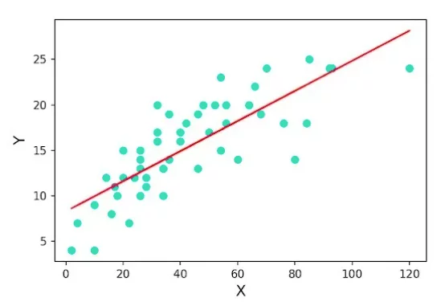
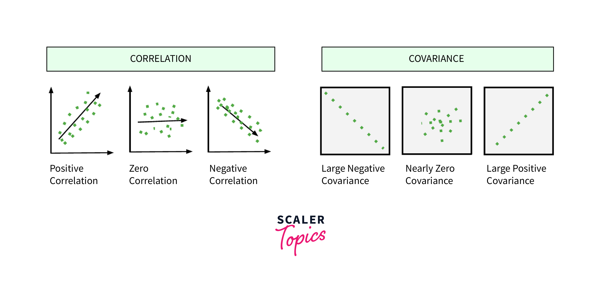
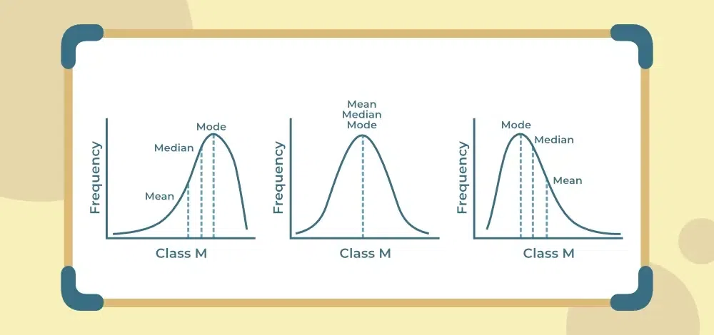
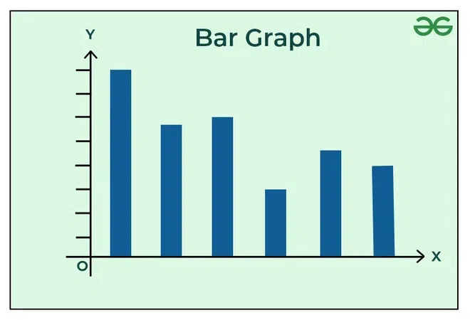
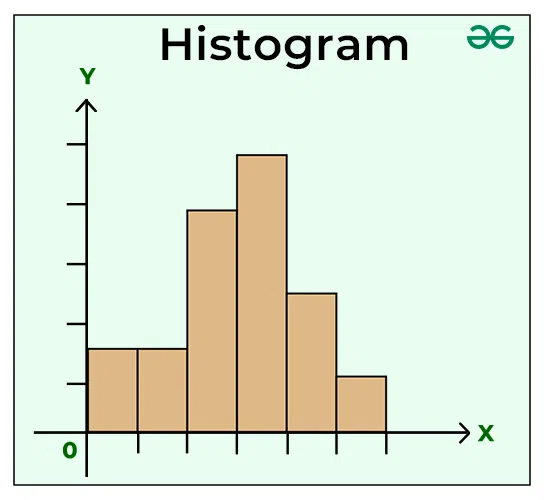
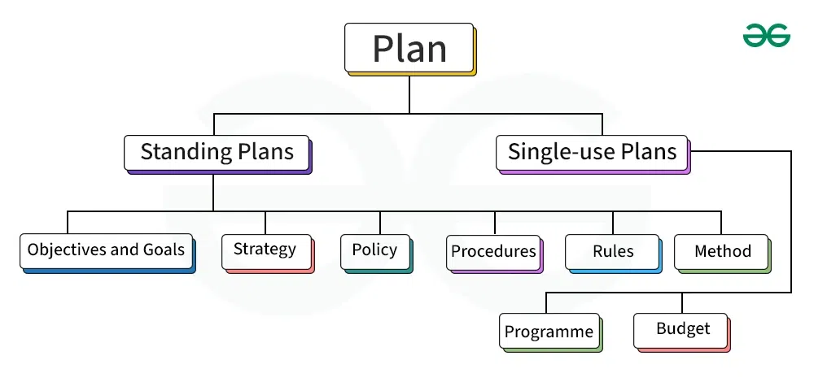
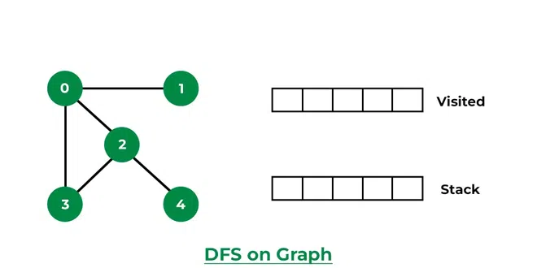
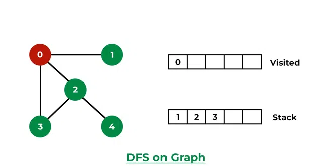
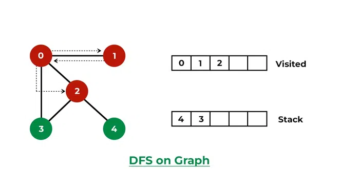
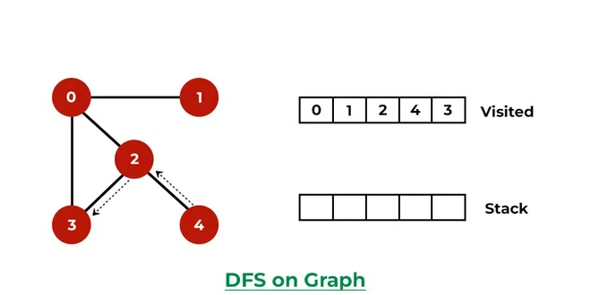

AI & DS
Describe PEAS and also write down the PEAS representations. (10 / Dec 23) (5 / May 23) (10 / Dec 22)
PEAS is an acronym used in the field of artificial intelligence to define the key components of an intelligent agent's design. Each letter represents a different aspect that contributes to the agent's behavior and decision-making process:
- Performance Measure (P):
- This component defines how the agent's success is measured. It specifies the criteria or metrics used to evaluate the agent's performance in achieving its goals.
- Environment (E):
- The environment refers to the external context in which the agent operates. It includes everything the agent interacts with, perceives, and affects while carrying out its tasks.
- Actuators (A):
- Actuators are the mechanisms through which the agent can act upon the environment. They enable the agent to perform actions based on its decision-making process.
- Sensors (S):
- Sensors are the means by which the agent perceives and gathers information about its environment. They provide input to the agent, allowing it to make informed decisions.
| Agent | Performance | Environment | Actuator | Sensor |
|---|---|---|---|---|
| Soccer player robot | Number of goals, penalties scored, Speed of players |
Team mates, opposition ground goal, referee |
Joint angles, motors |
Camera proximity sensor, infrared sensor |
| Part picking robot | Percentage of parts in correct bins | Conveyor belt with parts bins | Jointed arm and hand | Camera, joint angle sensors |
| Medical diagnosis system | Healthy patient minimized cost | Patient, hospital staff |
Perscription diagnosis, scan report |
Symptoms patient response |
| Auto mated car | Comfortable trip safety maximum | Roads, traffic vehicles |
Wheel, accelerator break mirror |
Camera, GPS, odometer |
| Subject tutoring | Maximize scores, improvement in students |
Classroom, Desk, chair, Board, staff, Students |
Smart displays, corrections |
Eyes, ears note books |
| Taxi Driver | Safe, fast, legal, comfortable trip, maximize profits |
Roads, other traffic, pedestrians, custormers |
Steering wheel, accelerator, break, signal, horn |
Cameras, sonar, speedometer, GPS, engine sensors, keyboard |
What are the Different Types of Machine Learning? (10 / May 23) (5 / Dec 22)

- Supervised Learning: Algorithms are trained with labeled data, where the input and output are known. This type is further divided into two categories:

- Classification: Predicting categorical target variables, such as spam detection or disease diagnosis.
- Regression: Predicting continuous target variables, such as stock prices or weather forecasting.
- 
- Classification: Predicting categorical target variables, such as spam detection or disease diagnosis.
- Unsupervised Learning: Algorithms are trained with unlabeled data, where the input is known, but the output is not. This type is further divided into two categories:

- Clustering: Grouping similar data points together, such as customer segmentation or anomaly detection.
- Association: Identifying relationships between data points, such as market basket analysis or recommendation systems.
- Clustering: Grouping similar data points together, such as customer segmentation or anomaly detection.
- Semi-Supervised Learning: Algorithms are trained with a combination of labeled and unlabeled data. This type is useful when obtaining labeled data is difficult or expensive.
- Reinforcement Learning: Algorithms learn by interacting with an environment and receiving feedback in the form of rewards or penalties. This type is often used in robotics, gaming, or navigation.


Explain what role is played by Correlation and Covariance in EDA? (5 / Dec 23) (5 / Dec 22)

Correlation and covariance play important roles in Exploratory Data Analysis (EDA) by providing insights into the relationships between variables in a dataset:
Covariance
Covariance measures how two variables vary together.
A positive covariance means the variables tend to move in the same direction, while a negative covariance indicates they move in opposite directions.
In EDA, covariance is used to:
- Identify variables that vary together and may be related
- Understand the magnitude of the relationship between variables, as covariance is not standardized and depends on the units of the variables
- Determine the direction of the relationship, which can be positive or negative
Correlation
Correlation is a standardized measure of the linear relationship between two variables.
It ranges from -1 to 1, with -1 indicating a perfect negative correlation, 0 indicating no linear correlation, and 1 indicating a perfect positive correlation
In EDA, correlation is used to:
- Identify strongly correlated variables that may be redundant or useful for prediction.
- Understand the strength and direction of the linear relationship between variables.
- Identify variables that may be good candidates for further analysis or inclusion in predictive models.
Explain various measures of the central tendencies of a statistical distribution. (5 / May 23) (5 / Dec 23)

Mean
The mean is the arithmetic average of the values in the dataset.
It is calculated by summing up all the values and dividing by the total number of observations.
The mean is a good measure when the data is normally distributed and there are no extreme values or outliers.
Median
The median is the middle value when the data is arranged in order from smallest to largest. If there is an even number of values, the median is the average of the two middle values.
The median is a good measure when the data is skewed or has extreme values.
Mode
The mode is the value that appears most frequently in the dataset.
A dataset can have more than one mode if there are multiple values tied for the highest frequency.
The mode is useful for categorical data and when there are clear peaks in the frequency distribution.
Some other measures of central tendency include:
- Geometric mean - the central tendency of a set of positive numbers, calculated by taking the nth root of the product of the numbers
- Harmonic mean - the reciprocal of the arithmetic mean of the reciprocals
- Midrange - the average of the smallest and largest values
Explain steps in the Data Science Project (10 / Dec 23) (10 / May 22)

What is rational agent? Explain with diagram. (5 / Dec 23) (5 / Dec 23)

A rational agent or rational being is a person or entity that always aims to perform optimal") actions based on given premises and information. A rational agent can be anything that makes decisions, typically a person, firm, machine, or software.
It's a theoretical entity that considers realistic models of how people think, with preferences for advantageous outcomes and an ability to learn. In other words, it's what most people would call "you."
Write a detailed note on Hypothesis Testing. What are type I and type II errors? (10 / Dec 23) (10 / May 23)

Hypothesis Testing is a type of statistical analysis in which you put your assumptions about a population parameter to the test. It is used to estimate the relationship between 2 statistical variables.
Examples of statistical hypothesis from real-life:
- A teacher assumes that 60% of his college's students come from lower-middle-class families.
- A doctor believes that 3D (Diet, Dose, and Discipline) is 90% effective for diabetic patients.
Hypothesis Testing Formula: Z = ( x̅ – μ0 ) / (σ /√n)
- Here, x̅ is the sample mean,
- μ0 is the population mean,
- σ is the standard deviation,
- n is the sample size.
A hypothesis test can result in two types of errors:
- Type I Error (False Positive)
- A type I error occurs when the null hypothesis is true, but it is rejected. In other words, it is the error of incorrectly concluding that there is a significant effect or difference when there isn't one in reality.
- Type II Error (False Negative)
- A type II error occurs when the null hypothesis is false, but it is not rejected. It is the error of failing to detect an effect or difference that is present in the population.
Write comparison between Business Intelligence, Data Science & Big Data (5 / Dec 23)
| Factor | Business Intelligence | Data Science | Big Data |
|---|---|---|---|
| Definition | Technologies, applications for business data analysis | Extraction of insights from data using scientific methods | Large volumes of data that require specialized tools |
| Focus | Past and present data analysis | Future trends and patterns prediction | Handling and analysis of massive datasets |
| Data | structured data | structured and unstructured data | large and complex datasets |
| Flexibility | Less flexible, pre-planned data sources | More flexible | Requires scalable and flexible data processing |
| Method | Analytic method | Scientific method | Utilizes specialized tools and technologies |
| Expertise | Business user | Data scientist | Requires expertise in handling large datasets |
| Questions | What happened | What will happen, what if | Focuses on how to handle and analyze data |
| Storage | Data warehouse | Real-time clusters | Specialized storage solutions for massive data |
| Integration of Data | ETL process | ELT process | Specialized processes for handling big data |
| Tools | InsightSquared, Klipfolio, etc. | SAS, BigML, Excel, etc. | Hadoop, evolving technologies for big data |
| Handling Data Sets | Limited tools for large datasets | Evolving technologies for large data handling | Specialized tools and technologies for big data |
What are heuristic functions? Where are they used? (5 / Dec 23)

If there are no specific answers to a problem or the time required to find one is too great, a heuristic function is used to solve the problem.
The aim is to find a quicker or more approximate answer, even if it is not ideal.
Put another way, utilizing a heuristic means trading accuracy for speed.
A heuristic is a function that determines how near a state is to the desired state.
Different Categories of Heuristic Search Techniques in AI
- Direct Heuristic Search Techniques
- Direct heuristic search techniques may also be called blind control strategy, blind search, and uninformed search.
- These include Depth First Search (DFS)") and Breadth First Search (BFS)").
- BFS is a heuristic search method to diagram data or quickly scan intersection or tree structures.
- Weak Heuristic Techniques
- Weak heuristic techniques are known as a Heuristic control strategy, informed search, and Heuristic search.
- A heuristic function is connected to each node.
Types of heuristic functions in ai are:
- Breadth-First Search (BFS)
- Depth First Search (DFS)
- Bidirectional Search
- A*
- Hill Climbing
- Best First search
- Beam search.
Heuristic functions are used in:
- Artificial Intelligence (AI)
- In AI, heuristic functions are commonly used in search algorithms like A* (A-star) to guide the search towards the most promising paths, reducing the search space and improving efficiency
- Optimization
- Heuristic functions play a crucial role in optimization problems, where they help in finding near-optimal solutions in complex scenarios where exhaustive search is not feasible.
- Decision Making
- Heuristics are employed in decision-making processes to simplify complex problems by using rules of thumb or strategies that are not guaranteed to be optimal.
- Electronic Design Automation (EDA)
- In the context of EDA, heuristic functions are utilized in algorithms like the Kernighan-Lin heuristic for circuit partitioning and placement, aiding in optimizing the layout of electronic circuits efficiently.
What is Unification? Give example (5 / Dec 23)
Unification in AI is a fundamental operation used in various applications like logic programming, natural language processing, and automated reasoning.
It involves making two different logical expressions identical by finding a substitution that satisfies both expressions.
Example 1:
Suppose we have the following expressions:
- Expression 1: f(a, X, g(Y))
- Expression 2: f(Z, b, g(h))
To unify these expressions, we need to find a substitution that makes them equal. The unification process involves matching corresponding parts and finding a set of variable assignments that satisfy both expressions:
Match f(a, X, g(Y)) with f(Z, b, g(h)):
- X unifies with b (X/b)
- Y unifies with h (Y/h)
- Z unifies with a (Z/a)
The resulting substitution is: {X/b, Y/h, Z/a}. Applying this substitution to both expressions gives us: f(a, b, g(h)) = f(a, b, g(h))
The expressions are now unified.
What is Skolemization? Explain Skolem constant and Skolem function. (5 / Dec 23)
Skolemization is a process used in Artificial Intelligence to transform first-order logic formulas into their Skolem normal form
This procedure is essential for theorem proving in programming, aiming to eliminate quantifiers from the resulting form.
Skolemization can't happen without removing quantifiers.
- Skolem Constant:
- A Skolem constant is a new constant introduced to substitute an existential variable when eliminating an existential quantifier from a logical formula.
- It is used to name the existing object that satisfies the formula, ensuring soundness in the proof process.
- Skolem Function:
- A Skolem function is a function introduced to replace an existentially quantified variable when the existential quantifier occurs in the scope of one or more universal quantifiers.
- It involves creating a function applied to free and universally quantified variables to maintain the logical structure of the formula.
The law says that it is a crime for an American to sell weapons to hostile nations. The country Nono, an enemy of America, has some missiles, and all of its missiles were sold to it by Colonel West, who is American. Prove that Col. West is a criminal! (10 / Dec 23)
Some Fact
- It is crime for Americans to sell the weapon to the enemy of America
- Country Nono is an enemy of America
- Nono has some Missiles
- All missiles were sold to Nono by Colonel
- Colonel is American
- Missile is a weapon
Goal:
- Colonel is criminal
Steps to be followed :
Fact conversion to Forward chaining with First-order Logic(FOL):
Step1 : It is crime for Americans to sell the weapon to the enemy of America

Step2 : Country Nono is enemy of America
FOL: Enemy(Nono, America)
Step3 : Nono has some Missile
FOL : Owns(Nono ,x)
Missile(x)
Step4 : All missiles were sold to Nono by Colonel
FOL : Missile(x) ^ Owns(Nono,x) → Sell(Colonel,x,Nono)
Step5 : Colonel is American
FOL : American(Colonel)
Step6 : Missile is weapon
FOL : Missile(x) → Weapon (x)
Proof:
Iteration 1:
- Start with the knowledge base/known facts : The facts that are not deduced from any other [ present in LHS of the statements ]
| American(Colonel) | Missile(x) | Owns(Nono , x) | Enemy(Nono , America) |
|---|
- Add inferences one by one to link the connections
- Rule (1) doesn’t satisfy the so it will not be added
- Rule (2) and Rule(3) FOL are already added
- Rule (4) matches the inference so we will add it.

- Rule(5) doesn’t have RHS so nothing added
- Rule (6) has weapon in RHS derived from Missile(x) , which is already a part so we will add weapon in our next state

That completes our first iteration
Iteration 2:
- Rule(1) has all the LHS conditions satisfied as we can see in the first iteration. So all the four FOL in LHS are available, now we can add Criminal(x) from RHS in our next state

We reached the goal state to deduce that: Colonel is a criminal
Explain uniform cost search and best first search in detail with examples and compare (10 / Dec 23)
Uniform Cost Search (UCS)

- Definition: Uniform Cost Search is an uninformed search algorithm that aims to find the lowest-cost path from the start node to the goal node.
- Approach: It expands nodes based on the actual cost of the path from the initial node to the current node.
- Priority Queue: Utilizes a priority queue to sort nodes based on the cost of the path, selecting nodes with the lowest cost for expansion.
- Optimality: When all edges have equal costs, UCS finds the optimal solution.
- Example: Consider a map where each edge represents a road with a specific cost. UCS would find the path with the lowest total cost from one location to another.
Best-First Search

- Definition: Best-First Search is an informed search algorithm that uses a heuristic function to estimate the cost from the current node to the goal node.
- Heuristic Function: Incorporates domain-specific knowledge to guide the search towards the most promising nodes.
- Selection Criteria: Nodes are expanded based on the estimated cost to the goal, not the actual path cost.
- Optimality: Best-First Search does not guarantee optimality but focuses on exploring nodes that are likely closer to the goal.
- Example: In a maze-solving scenario, Best-First Search would prioritize nodes that are closer to the exit based on the heuristic estimate.
Comparison of Uniform Cost Search and Best-First Search
| Feature | Uniform Cost Search (UCS) | Best-First Search (BFS) |
|---|---|---|
| Type of Search | Uninformed | Informed |
| Evaluation Function (f(n)) | g(n) | h(n) |
| Expands Nodes | Lowest actual cost path cost | Node with the most promising path to the goal (based on heuristic) |
| Completeness | Guaranteed | Not guaranteed, |
| Optimality | Finds the lowest cost solution | May not find the optimal solution |
| Time Complexity | Exponential (worst case) | Exponential (worst case) |
| Space Complexity | Exponential (worst case) | Exponential (worst case) |
| Use Case | When actual cost is the only relevant factor | When an informative heuristic is available to guide the search |
| Advantages | Guaranteed to find optimal solution, easy to implement | Potentially faster search with a good heuristic |
| Disadvantages | Can be slow for large search spaces, may explore irrelevant paths | May miss the optimal solution, requires a good heuristic function |
Explain various stages in the Data analytics Lifecycle. (10 / Dec 23)

- Define the problem: This is the initial step where you identify the question you are trying to answer using the data. A well-defined problem will guide the data collection and analysis process.
- Collect data: In this stage, you gather the data required to address the problem you defined. Data can be collected from various sources such as surveys, experiments, or databases.
- Clean data: The data you collect may contain errors or inconsistencies. This step involves cleaning the data to ensure its accuracy and usability for analysis.
- Analyze data: This stage involves performing statistical analysis on the cleaned data to extract patterns and insights that answer your question.
- Data Visualization: Here, you represent the analyzed data in a visual format such as charts or graphs to make it easier to understand and interpret the patterns.
- Present the findings: This is the final step where you communicate the results of your data analysis to the audience. You can present the findings in reports, presentations or dashboards.
Explain SVM in detail (10 / Dec 23)

SVM stands for Support Vector Machine, which is a supervised machine learning algorithm used for classification and regression tasks.
SVMs can be used for a variety of tasks, such as text classification, image classification, spam detection, handwriting identification, gene expression analysis, face detection, and anomaly detection
Types of Support Vector Machine
- Linear SVM:
- Linear SVMs use a linear decision boundary to separate the data points of different classes.
- Non-Linear SVM:
- Non-Linear SVM can be used to classify data when it cannot be separated into two classes by a straight line (in the case of 2D).
Support Vector Machine Terminology
- Hyperplane:
- Definition: A hyperplane is like a decision boundary that separates different classes in the data.
- Simple Explanation: Imagine it as a line or surface that divides data points into groups.
- Support Vectors:
- Definition: Support vectors are the data points closest to the hyperplane.
- Simple Explanation: They are the key points that help define the boundary between different groups.
- Margin:
- Definition: The margin is the distance between the hyperplane and the closest data points.
- Simple Explanation: It's like the safety buffer or gap between the groups, making the classification more reliable.
- Kernel:
- Definition: A kernel is a function that measures similarity between data points.
- Simple Explanation: It's a way to transform data to make it easier to separate into groups.
- Hard Margin:
- Definition: Hard margin SVM aims for a strict separation of data points.
- Simple Explanation: It's like drawing a clear line between groups without any errors.
- Soft Margin:
- Definition: Soft margin SVM allows for some errors in classification.
- Simple Explanation: It's more flexible, allowing for a few mistakes to find a better overall solution.
- C:
- Definition: C is a parameter that controls the trade-off between smooth decision boundaries and classifying points correctly.
- Simple Explanation: It's like a knob that adjusts how strict the SVM should be in classifying data.
- Hinge Loss:
- Definition: Hinge loss is a loss function that penalizes misclassifications.
- Simple Explanation: It's a way to measure how wrong the SVM is in its predictions.
- Dual Problem:
- Definition: The dual problem is an alternative way to solve the optimization problem in SVMs.
- Simple Explanation: It's like looking at the problem from a different angle to find the best solution.
Write in detail issues in machine learning. (10 / Dec 23)
Inadequate Training Data
- The major issue that comes while using machine learning algorithms is the lack of quality as well as quantity of data.
- Although data plays a vital role in the processing of machine learning algorithms, many data scientists claim that inadequate data, noisy data, and unclean data are extremely exhausting the machine learning algorithms.
- Data quality can be affected by some factors as follows:
- Noisy Data- It is responsible for an inaccurate prediction that affects the decision as well as accuracy in classification tasks.
- Incorrect data- It is also responsible for faulty programming and results obtained in machine learning models. Hence, incorrect data may affect the accuracy of the results also.
- Generalizing of output data- Sometimes, it is also found that generalizing output data becomes complex, which results in comparatively poor future actions.
Poor quality of data
- As we have discussed above, data plays a significant role in machine learning, and it must be of good quality as well.
- Noisy data, incomplete data, inaccurate data, and unclean data lead to less accuracy in classification and low-quality results.
Overfitting
- Overfitting is one of the most common issues faced by Machine Learning engineers and data scientists.
- Whenever a machine learning model is trained with a huge amount of data, it starts capturing noise and inaccurate data into the training data set.
- It negatively affects the performance of the model.
- Example:
- We have a few training data sets such as 1000 mangoes, 1000 apples, 1000 bananas, and 5000 papayas.
- Then there is a considerable probability of identification of an apple as papaya because we have a massive amount of biased data in the training data set; hence prediction got negatively affected.
Underfitting:
- Underfitting is just the opposite of overfitting.
- Whenever a machine learning model is trained with fewer amounts of data, and as a result, it provides incomplete and inaccurate data and destroys the accuracy of the machine learning model.
- Underfitting occurs when our model is too simple to understand the base structure of the data, just like an undersized pant.
- This generally happens when we have limited data into the data set, and we try to build a linear model with non-linear data.
Monitoring and maintenance
- As we know that generalized output data is mandatory for any machine learning model; hence, regular monitoring and maintenance become compulsory for the same.
- Different results for different actions require data change; hence editing of codes as well as resources for monitoring them also become necessary.
Getting bad recommendations
- A machine learning model operates under a specific context which results in bad recommendations and concept drift in the model.
- Example:
- A specific time customer is looking for some gadgets, but now customer requirement changed over time but still machine learning model showing same recommendations to the customer while customer expectation has been changed.
- This incident is called a Data Drift. It generally occurs when new data is introduced or interpretation of data changes.
- However, we can overcome this by regularly updating and monitoring data according to the expectations.
Lack of skilled resources
- The absence of skilled resources in the form of manpower is also an issue.
- Hence, we need manpower having in-depth knowledge of mathematics, science, and technologies for developing and managing scientific substances for machine learning.
Process Complexity of Machine Learning
- The machine learning process is very complex, which is also another major issue faced by machine learning engineers and data scientists.
- However, Machine Learning and Artificial Intelligence are very new technologies but are still in an experimental phase and continuously being changing over time. There is the majority of hits and trial experiments; hence the probability of error is higher than expected.
Data Bias
- Data Biasing is also found a big challenge in Machine Learning.
- These errors exist when certain elements of the dataset are heavily weighted or need more importance than others.
- Biased data leads to inaccurate results, skewed outcomes, and other analytical errors.
Irrelevant features
- Although machine learning models are intended to give the best possible outcome, if we feed garbage data as input, then the result will also be garbage.
- Hence, we should use relevant features in our training sample.
- A machine learning model is said to be good if training data has a good set of features or less to no irrelevant features.
Elaborate in detail the steps in developing a Machine Learning application with architectural diagram. (10 / Dec 23)

- Online/Offline Feature Store:
- It's a place where features (important data) are stored and shared.
- Having an online store helps get features quickly for real-time predictions.
- The offline store keeps a history of features, which is useful for training models and making predictions in batches.
- Model Registry:
- It's like a library where trained models and their information are kept.
- It helps keep track of how models were made and changed over time, like a version control system.
- Performance Feedback Loop:
- It's a way to improve the data used to train models based on how well the model performs.
- If the model doesn't do well, it can help figure out how to make the data better.
- Model Drift Feedback Loop:
- It's similar to the performance feedback loop, but it checks if the model is still working well after it's been used for a while.
- If the model starts making more mistakes, it can help update the data to fix the problem.
- Alarm Manager:
- It's like a watchdog that barks when something goes wrong with the model.
- When the model monitoring system detects an issue, the alarm manager sends alerts to the right people or systems.
- One of those systems is the model re-training pipeline, which can fix the model if needed.
- Scheduler:
- It's a timekeeper that tells the system to re-train the model at regular intervals.
- This helps keep the model up-to-date and performing well over time.
- Lineage Tracker:
- It's like a time machine for the machine learning process.
- It records all the versions of the data, code, and environment used to create the model.
- This allows going back in time and recreating the exact conditions used to train the model.
What do you mean by covariance and correlation? Explain the range of coefficients of correlation and covariance. Calculate COV(Observed Value1, Observed Value2) and CORRCOV(Observed Value1, Observed Value2) for following data. How do you interpret these values? (10 / Dec 23)
| Experiment No | Observed Value1 | Observed Value2 |
|---|---|---|
| 1 | 38 | 20 |
| 2 | 62 | 15 |
| 3 | 22 | 30 |
| 4 | 38 | 21 |
| 5 | 45 | 18 |
| 6 | 69 | 12 |
| 7 | 75 | 14 |
| 8 | 38 | 28 |
| Experiment No | Observed Value1 | Observed Value2 |
|---|---|---|
| 9 | 80 | 9 |
| 10 | 32 | 22 |
| 11 | 51 | 20 |
| 12 | 56 | 19 |
| 13 | 21 | 28 |
| 14 | 34 | 23 |
| 15 | 76 | 14 |
Differentiate Between Forward and Backward chaining (5 / May 23)
| Aspect | Forward Chaining | Backward Chaining |
|---|---|---|
| Strategy | Data-driven | Goal-driven |
| Starting Point | Known Facts/Data | Goal |
| Technique | Works from available data towards the final decision | Works from the goal towards the initial state |
| Approach | Bottom-up strategy | Top-down strategy |
| Search Strategy | Breadth-First Strategy | Depth-First Strategy |
| Goal | Focuses on reaching the conclusion | Aims to determine the possible facts or required data |
| Speed | Slower | Faster |
| Efficiency | Slower | Faster |
| Direction | Forward | Backward |
| Application | Used for planning, monitoring, control, and interpretation | Utilized in automated inference engines, theorem proofs, and other AI applications |
Compare different search techniques based on their time complexities. (5 / May 23)
| Search Algorithm | Best Case | Average Case | Worst Case |
|---|---|---|---|
| Linear Search | O(1) | O(n) | O(n) |
| Binary Search | O(1) | O(log n) | O(log n) |
| Depth-First Search (DFS) | O(1) | O(b^d) | O(b^m) |
| Breadth-First Search (BFS) | O(1) | O(b^d) | O(b^d) |
| Uniform-Cost Search | O(1) | O(b^(C*/ε)) | O(b^(C*/ε)) |
| Iterative Deepening DFS | O(1) | O(b^d) | O(b^d) |
| Bidirectional Search | O(1) | O(b^(d/2)) | O(b^(d/2)) |
What is a histogram? Can we perform univariate graphical analysis using histogram? (5 / May 23)
A histogram is a graphical representation commonly used to visualize the distribution of numerical data.
It consists of bars, each representing the frequency or count of observations falling within specific intervals, known as bins.
Histograms provide insights into the frequency of different data points, the center of data, the spread of the dataset, skewness/variance, and the presence of outliers.
Univariate graphical analysis can indeed be performed using a histogram. Here is example:

What are the different ways of knowledge representation? (5 / May 23)

- Logical Representation:
- Logical representation uses rules and conditions to draw conclusions without any ambiguity.
- It follows specific communication rules and has clear syntax and semantics for sound inference.

- Semantic Network Representation:
- Semantic networks represent knowledge using graphical networks with nodes (objects) connected by arcs (relationships).
- This visual representation makes it easy to understand relationships between objects.

- Frame Representation:
- Frames are like records that describe entities with attributes and values.
- They organize knowledge into substructures, representing stereotypical situations.
- Frames store information about objects or events in a structured way.
- Example of a book frame:
| Slots | Filters |
|---|---|
| Title | Operating System |
| Genre | Computer Science |
| Author | Vivek Sahu |
| Edition | Sixth Edition |
| Year | 1999 |
| Page | 982 |
- Production Rules:
- Production rules involve conditions and actions.
- When a condition is met, a rule fires, triggering a specific action.
- This system helps in problem-solving by recognizing conditions and executing corresponding actions.
Can 1 Liter water be measured using 10 Liter and 4 liter jug? Justify. (10 / May 23) (10 / Dec 22)
Compare Linear Regression Vs Logistics Regression with suitable diagrams and formulas (10 / May 23)
| Aspect | Logistic Regression | Linear Regression |
|---|---|---|
| Purpose | Used for predicting categorical outcomes, especially when the dependent variable is binary | Used for predicting continuous outcomes, assuming a linear relationship between variables |
| Equation | 𝑦=𝑎+𝑏𝑥y=a+bx | 𝑝=11+𝑒−(𝑎+𝑏𝑥)p=1+e−(a+bx)1 |
| Output | Categorical outcome (e.g., yes/no, 1/0) | Continuous outcome (e.g., price, temperature) |
| Model Type | Classification | Regression |
| Error Distribution | Binomial | Normal/Gaussian |
| Sensitivity to Outliers | Less | More |
| Estimation Method | Maximum Likelihood Estimation (MLE) | Ordinary Least Squares (OLS) |
| Equation/Function | Logistic (Sigmoid) function | Linear equation |

State A* algorithm and explain with example how A* searching algorithm helps in finding the goal with optimal path. (10 / May 23)
The A* algorithm, pronounced as "A-star," is a widely used and powerful graph traversal and pathfinding algorithm in artificial intelligence.
It efficiently finds the shortest path between two nodes in a graph by considering both the actual cost incurred so far and an estimate of the remaining cost.
Here's how A* works and its significance in finding optimal paths:

| State | h(n) |
|---|---|
| S | 5 |
| A | 3 |
| B | 4 |
| C | 2 |
| D | 6 |
| G | 0 |
- S->A => F(n) = g(n) + h(n) = 1 + 3 = 4
S->G => F(n) = 10 + 0 = 10 - Hold
S->A->B = (1 + 2) + 4 = 7 - Hold
S->A->C = (1 + 1) + 2 = 4
S->A->C->D = (1 + 1 + 3) + 6 = 11 - Hold
S->A->C->G = (1 + 1 + 4) + 0 = 6 - Stop reached the goal
With respect to Quantitative data analysis explain following: i. Measure of central tendencies, ii. Measure of spread, iii. Skewness and Kurtosis (10 / May 23)
Measures of Central Tendency
The measures of central tendency describe the central or typical value in a dataset. The three main measures are:
- Mean: The arithmetic average, calculated by summing all values and dividing by the total number of values. It is suitable for symmetric distributions but sensitive to outliers.
- Median: The middle value when data is arranged in order. For even datasets, it is the average of the two middle values. The median is a robust measure for skewed distributions
- Mode: The value that appears most frequently in the dataset. The mode is useful for categorical data and can identify multiple peaks in a distribution
Measures of Spread
Measures of spread describe how dispersed the data is around the central tendency. Common measures include:
- Range: The difference between the highest and lowest values
- Variance: The average squared deviation from the mean
- Standard Deviation: The square root of the variance, measuring the expected deviation from the mean
Skewness

- Positive Skewness (Right-Skewed)
- The distribution has a longer tail on the right side
- Most of the data is concentrated on the left side
- No Skewness (Symmetric)
- The distribution is symmetric, with equal tails on both sides
- The mean, median and mode are equal
- Negative Skewness (Left-Skewed)
- The distribution has a longer tail on the left side
- Most of the data is concentrated on the right side
Kurtosis

- Mesokurtic: This distribution is balanced and symmetrical, like a normal distribution where both ends of the graph look similar.
- Leptokurtic: In this distribution, the tails are longer than in a balanced distribution. This means more data points are far from the average, making the tails stretch out.
- Platykurtic: This distribution has shorter tails compared to a balanced one. It means there are fewer data points far from the average, making the tails flatter.
Was Marcus loyal to Casear ? Solve using resolution. (10 / May 23)
1. Marcus was a man.
2. Marcus was a Pompeian.
3. All Pompeians were Romans.
4. Caesar was a ruler.
5. All Pompeians were either loyal to Caesar or hated him.
6. Every one is loyal to someone.
7. People only try to assassinate rulers they are not loyal to.
8. Marcus tried to assassinate Caesar.
Can min-max be used for team games? Draw sample trees for 2 and 3 teams (10 / May 23)
Min-max can be used for team games with some limitations. Here's why:
Limitations of Min-Max for Team Games:
- Non-Zero-Sum Games: Min-max is designed for zero-sum games where one player's gain is another player's loss (e.t., chess). Team games often involve cooperation and achieving a common goal, making them non-zero-sum.
- Hidden Information: Min-max assumes perfect information about the opponent's moves. In team games, teammates' strategies might be hidden, and communication can be limited.
Example

Consider you are performing ML for predicting housing prices you have trained three models and following data summarizes the predicted house price by each model for 5 different trial runs. (10 / May 23) (10 / Dec 22)
| Model Code | Trial 1 | Trial 2 | Trial 3 | Trial 4 | Trial 5 |
|---|---|---|---|---|---|
| A | 3.5 | 3.4 | 3.8 | 3.5 | 3.4 |
| B | 3.9 | 3.8 | 3.7 | 3.9 | 3.6 |
| C | 3.5 | 3.3 | 3.6 | 3.5 | 3.8 |
Perform One way ANOVA F Test on this data and comment on whether the mean house price predicted by models A, B, C are same with level of significance 0.05.
What are the rules of conversion from predicate to CNF? Explain each rule with proper example. (10 / May 23)
- Remove the Biconditional Using a Rule:
- Rule: Replace biconditionals (⇔) with conjunctions of implications.
- Example: Convert α ⇔ β to (α ⇒ β) ∧ (β ⇒ α).
- Remove the Implication Using a Rule:
- Rule: Replace implications (⇒) with disjunctions.
- Example: Convert α ⇒ β to ¬α ∨ β.
- Move the Negation Inwards:
- Rule: Apply De Morgan's laws to move negations inside the expressions.
- Example: Convert ¬(α ∧ β) to ¬α ∨ ¬β.
- Apply Distributive and/or Commutative Laws:
- Distributive Law: a ∧ (b ∨ c) ≡ (a ∧ b) ∨ (a ∧ c)
- Commutative Law: a ∧ b ≡ b ∧ a, a ∨ b ≡ b ∨ a
- Example: Convert (α ∧ β) ∨ γ to (α ∨ γ) ∧ (β ∨ γ) using the distributive law.
What is bidirectional search? (5 / Dec 22)

Bidirectional search is a graph search algorithm that finds the shortest path from a source vertex to a goal vertex by running two simultaneous searches:
- one forward from the source
- one backward from the goal.
What is the Difference between Univariate, Bivariate, and Multivariate analysis? (5 / Dec 22)
| Aspect | Univariate Analysis | Bivariate Analysis | Multivariate Analysis |
|---|---|---|---|
| Number of Variables | Focuses on a single variable | Two variables simultaneously | Three or more variables simultaneously |
| Purpose | Describes and summarizes the distribution of a single variable | Explores the relationship between two variables | Understands complex relationships among multiple variables |
| Examples | Mean, median, mode, histograms, box plots | Scatter plots, correlation coefficients, contingency tables | Multiple regression, principal component analysis, cluster analysis |
| Relationship Analysis | Does not explore relationships between variables | Focuses on understanding the relationship between two variables | Examines how multiple variables interact and influence each other |
| Visualization Techniques | Histograms, frequency polygons, bar charts | Scatter plots, bar charts, correlation matrices | Heatmaps, scatter plots, factor analysis |
| Dependent Variable | Not applicable | Typically one | Can have multiple pen_spark |
| Number of Variables Analyzed | One | Two | More than Two |
Explain the Confusion Matrix with respect to Machine Learning Algorithms. (10 / Dec 22)

A *confusion matrix* is a matrix that summarizes the performance of a machine learning model on a set of test data.
It is a means of displaying the number of accurate and inaccurate instances based on the model’s predictions.
It is often used to measure the performance of classification models, which aim to predict a categorical label for each input instance.
The matrix displays the number of instances produced by the model on the test data.
- True positives (TP): occur when the model accurately predicts a positive data point.
- True negatives (TN): occur when the model accurately predicts a negative data point.
- False positives (FP): occur when the model predicts a positive data point incorrectly.
- False negatives (FN): occur when the model mispredicts a negative data point.
Write a note on Hill climbing. Explain an application of it. (10 / Dec 22)
Hill climbing is a simple optimization algorithm used in Artificial Intelligence (AI) to find the best possible solution for a given problem.

- Local maximum: This state is better because here the value of the objective function is higher than its neighbors.
- Global maximum: It is the best possible state in the state space diagram. This is because, at this stage, the objective function has the highest value.
- Plateau/flat local maximum: It is a flat region of state space where neighboring states have the same value.
- Ridge: It is a region that is higher than its neighbors but itself has a slope. It is a special kind of local maximum.
- Current state: The region of the state space diagram where we are currently present during the search.
- Shoulder: It is a plateau that has an uphill edge.
Types of Hill Climbing
- Simple Hill Climbing:
- This is the simplest form of Hill Climbing.
- It examines the current node's neighbors and selects the first neighbor that improves upon the current node as the next step.
- It's efficient but can get stuck at local maxima.
- Steepest-Ascent Hill Climbing:
- This algorithm examines all the neighboring nodes of the current state
- It selects the neighbor that is closest to the goal state as the next step.
- It's more thorough than simple Hill Climbing but takes more time since it checks multiple neighbors.
- Stochastic Hill Climbing:
- This algorithm randomly selects a neighbor node to move to, rather than examining all neighbors.
- It decides whether to accept the randomly selected neighbor as the new current state or explore another neighbor.
- It's less systematic than the other two approaches but can help avoid getting stuck in local maxima.
Application of Hill Climbing
Travelling Salesman Problem (TSP)
In this problem, the goal is to find the shortest possible route that visits each city exactly once and returns to the starting city.
Here's how the Hill Climbing algorithm can be applied to solve the TSP:
- Construct an initial solution: Start with a sub-optimal solution that visits all the cities exactly once. This initial solution may not be optimal, but it serves as a starting point for the algorithm.
- Improve the solution iteratively: Apply the Hill Climbing algorithm to improve the solution step-by-step. In each iteration, select a pair of cities and swap their positions in the current route. If the new route is shorter than the current route, accept the change and make it the new current route.
- Continue until no further improvement is possible: Keep applying the Hill Climbing algorithm until no more swaps can be made that result in a shorter route. At this point, the algorithm has reached a local minimum, and the current route is the best solution found so far.
What are the steps of Exploratory Data Analysis? (10 / Dec 22)

Explanatory Data Analysis (EDA) in machine learning is a way of visualizing, summarizing and interpreting the information that is hidden in row and column format.
Once EDA is complete and insights are draw, its features can be used for supervised and unsupervised Machine Learning modeling.
Purpose of EDA
- It helps to look at data before making any assumption.
- Understanding of data can be easy with EDA.
Types of EDA

- Univariate Non-graphical:
- Analyzing individual variables without visualizations, using techniques like descriptive statistics and frequency tables.
- Example:
- 3, 6, 8, 8, 9, 10, 13, 15, 16 - mean = 9.78 - median = 9 - mode = 8 -
- Univariate graphical: Visualizing individual variables using charts like histograms, bar charts, and box plots to understand distribution, center, and spread.
- Example:
- Bar Graph:
- 
- Histogram:
- 
- Bar Graph:
- Example:
- Multivariate Non-graphical: Analyzing relationships between multiple variables without visualizations, using techniques like cross-tabulation and correlation.
- Example: MANOVA
- Multivariate graphical: Visualizing relationships between multiple variables using methods like side-by-side box plots, scatter plots, and heatmaps.
- Example:
- Scatter plot:
- Scatter plot:
- Example:

What is ANOVA technique? Explain different types of ANOVA. (10 / Dec 22)

- Stands for Analysis of Variance
- It enables us to test significance of difference among more then two sample means.
- Test statistics for ANOVA is F-test
- Assumption for ANOVA
- Samples follow normal distribution
- Samples have been selected randomly and independently.
- Each group should have common variance
- Data are independent.
Types of ANOVA
- One-Way ANOVA
- Compares the means of three or more groups
- Determines if there are differences between the groups
- Used when there is one independent variable with two or more levels
- Tests for differences in means between groups and the impact of a single factor
- Two-Way ANOVA
- Extends One-Way ANOVA by analyzing the effects of two independent variables
- Used when there are two explanatory variables influencing a continuous outcome
- Involves two factors, each with multiple levels
- Allows for the analysis of interactions between the two factors
- Three-Way ANOVA (and higher):
- Similar to two-way ANOVA, this type examines the effects of three or more independent variables on a dependent variable.
- It's used in complex studies with multiple factors influencing the outcome.
What are the different types of plans?

Plans can be classified into standing plans (used repeatedly) and single-use plans (one-time).
Plans can be categorized based on their scope and time frame, such as operational, tactical, and strategic plans.
Contingency plans are developed to handle unexpected situations.
- Standing plans are ongoing plans that provide guidance for repetitive activities. Examples include policies, procedures, rules, methods, and budgets.
- Policies are general guidelines that outline the acceptable course of action in a situation.
- Procedures are detailed, step-by-step instructions for completing a specific task.
- Rules are specific regulations that must be followed.
- Methods are recommended ways to perform a task.
- Budgets are financial plans that project future income and expenses.
- Single-use plans are created to address a specific situation or problem and are not intended to be used repeatedly. Examples include programs and projects.
- Programs are a set of interrelated projects designed to achieve a common goal.
- Projects are temporary endeavors undertaken to create a specific outcome.
At the top of the hierarchy are objectives and goals. These are the desired outcomes that all plans aim to achieve.
- Objectives are broad statements of what needs to be accomplished.
- Goals are specific, measurable, achievable, relevant, and time-bound (SMART) objectives.
Strategy refers to the overall approach for achieving the objectives and goals. It outlines the specific course of action that will be taken.
Explain Data Visualization and its importance in data analytics?
Data visualization is the graphical representation of data to facilitate exploration and communication of insights.
It involves creating visual representations like charts, graphs, and maps to present complex data in an easily understandable format.
Data visualization plays a crucial role in data analytics by enabling analysts to derive meaningful patterns and insights from data.
Importance of Data Visualization in Data Analytics:
Analyzing Complex Data:
- Data visualization simplifies complex information, making it easier to analyze and understand vast amounts of data.
- It helps in identifying patterns, trends, and outliers that may not be apparent from raw data.
Faster Decision Making:
- Visual representations help decision-makers process information more quickly and make informed decisions.
- By presenting data visually, complex insights can be understood at a glance, accelerating decision-making processes.
Making Sense of Data:
- Data visualization allows users to gain insights into data, recognize patterns, and identify errors.
- It helps in spotting trends, clusters, and outliers, enabling users to focus on critical areas for further analysis.
Effective Communication:
- Visualizations aid in communicating insights and findings to stakeholders in a clear and compelling manner.
- They facilitate storytelling by creating a narrative around the data that resonates with the audience.
Exploring Business Insights:
- Data visualization helps in exploring business insights, correlating data, and understanding critical metrics.
- It allows analysts to gain a holistic view of data and extract valuable information for decision-making.
* Types of Agent

* Wumbus world problem

- The Wumpus world's agent is an example of a knowledge-based agent that represents knowledge representation, reasoning and planning.
- Problem statement - The wumpus world is a cave with 16 rooms (4x4). Each room is connected to others through walkways (no rooms are connected diagonally). The knowledge-based agent starts from Room.
- The cave has some pits, a treasure and a beast named Wumpus.
- The wumpus can not move but eats the one who enters its room.
- If the agent is rewarded, when the goal conditions are met.
- The agent is penalized, when it falls into a pit or being eaten by the weimpus.
- Some elements support the agent to explore the cave like - The wumpu's adjacent rooms are stench
- PEAS representation of Wumpus world proble
- Performance
- Agent gets the gold & return back safe = +1000 points
- Each move of the agent = -1 point
- Agent dies = -1000 points
- Agent uses the arrow = -10 point
- Environment
- A cave with 16(4x4) rooms
- Rooms adjacent to the wumpus are stinking
- Rooms adjacent to the pit are breezy
- The room with gold glitters
- Agent's initial position-room [1, 1] & facing right side.
- Location of wumpus, gold and 3 pits can be anywhere except in room [1, 1].
- Actuators
- Devices that allows the agent to perform the following action in the environment.
- Move forward
- Turn right
- Turn left
- Shoot
- Grab
- Release
- Devices that allows the agent to perform the following action in the environment.
- Sensors
- Devices which helps the agent in sensing the following the environment.
- Breeze
- Stench
- Glitter
- Scream (When the Wumpus is killed)
- Bump (When agent hits a wall)
- Devices which helps the agent in sensing the following the environment.
- Performance
* Type of Search Techniques
 Iterative deeping depth first search
Iterative deeping depth first search
Uniformed Search
Uninformed search in AI, also known as blind search, refers to a type of search algorithm that explores a problem space without using any specific knowledge or heuristics about the problem.
Breadth First Search
- Uses FIFO (First in First Out) queue.
- Unlike depth first search, the breadth first search completes 1 level fist then go to next level.
- It always complete the answer.
- Example:

Uniform Cost Search
- Uniform cost search considers the expense.
- When there are multiple paths to achieving the desired objective, the optimal solution of uniform cost algorithms is the one with the lowest cost.

$=S-A \to A-D \to D-G$
$=1+2+3$
$=6$
Depth First Search
- Unlike breath first search, the depth first search goes to all way to the depth instead of completing one level.
- It can go to infinity loop.
- Example:


-copy-660.webp)

-copy-660.webp)

Depth Limited Search
- It work like Depth first search.
- But has depth limit how low it can search.
- After reaching depth limit, if it can't find the goal node then will jump to other side of node.

Iterative Deepening Search first search
Iterative Deepening Search | IDS Search | DFS Algorithm in Artificial Intelligence by Mahesh Huddar


Bidirectional Search
- Two simultaneous search from on initial node to goal and backward from goal to initial, stopping when two meet.
- Time Complexity: $2(b^{\frac{d}{2}})$
- Complete in breadth first search.
- Not in depth first search.

Informed Search
Informed search in AI is a type of search algorithm that uses additional information, such as heuristics or cost estimates, to guide the search process and prioritize which nodes to expand and explore.
Best First Search
Source: Best First Search Algorithm in Artificial Intelligence | How it Works | All Imp Points(Pros & Cons)
- Also know as greedy search.
- This algorithm does not involve past knowledge.
- BFS (Best First Search) = F(n) = g(n)

*A
- This search algorithm involve past knowledge.
- A* search is optimal as the path found is always optimal.
- A* = g(n) + h(n)

* Propositional logic
Source: Propositional Logic, Propositional Variables & Compound Propositions
Proposition is a declarative sentence which can be either TRUE or FALSE but cant be both.
Examples:
- Statement that are propositional logic (because they are stating a fact and are either true or false but not both).
- Delhi is the capital of India.
- Water Froze this morning.
- 1+1=2
- Statement that not propositional logic
- What time is it? (Not stating a fact and not declarative sentence)
- x + 1 = 2 (can be both TRUE or FALSE)


* First order logic
Source: Introduction to First Order Logic
First-order logic (FOL) is a type of mathematical logic that allows you to reason about properties of objects using quantifiers like "all" (represented as ∀) and "some" (represented as ∃).
Unlike propositional logic, which deals with true or false statements, FOL works with both.
Predicates:


Examples:

* Graph coloring
- Let G be graph 8m be a given positive number.
- With m colors we have to check whether the nodes of G can be colored in such a way that no two adjacent nodes have same color.
- Chromatic Number (m): The m color-ability optimization asks for the smallest integer (m) from which the graph G can be colored.
Example: